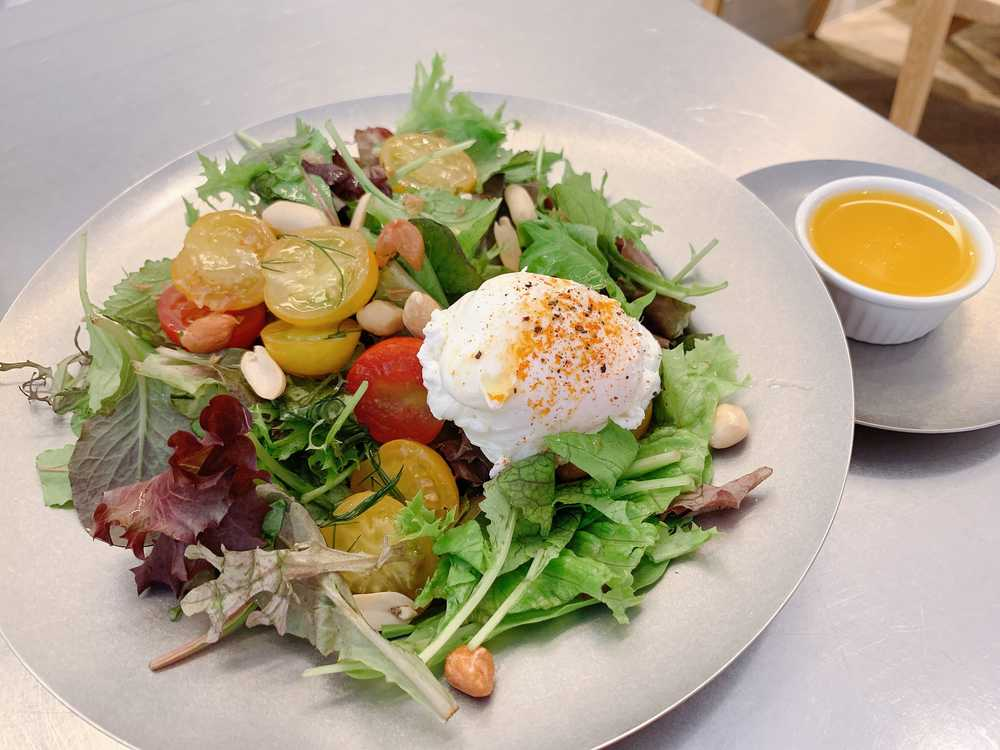
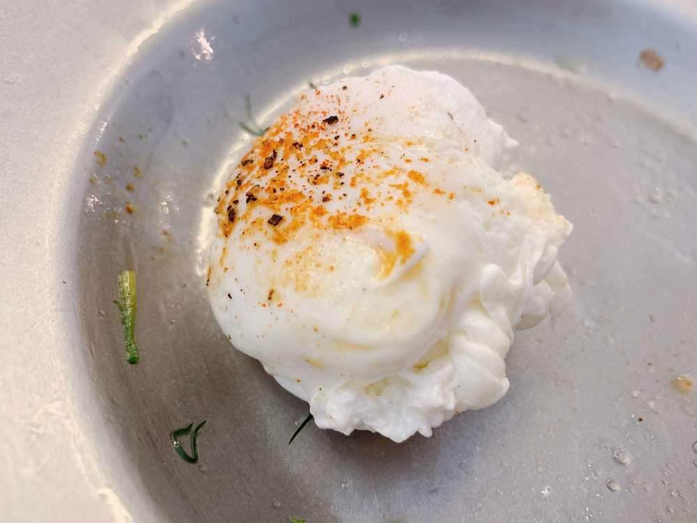

こんばんは🌆
ひいだよ🍓

この間無性に朝からサラダが食べたくなって
わざわざ食べに行ってきました🏃♀️💨
そのサラダの写真🤳🥗✨
中にはナッツも入ってたよ🥜
そこに卵をトッピング🥚
ドレッシングはかけるより
つけながら食べるのが好きなので
別添えにしてもらいました☺️
むしろこのサラダは
トマトやナッツが入ってるので
ほぼドレッシングつけないで食べられました笑
ドレッシング無い方が
ヘルシーに食べられるからね🤭💕💭
朝からたくさんの野菜が食べられて
幸せでした〜☺️✨
最近サラダ屋さん巡りにハマってます🥗
まだあまり行けてないけど
暇さえあれば調べてるよ〜🔎
行けないときは
デリバリーしたりします💨
あとはグルテンフリーのものとか
ヴィーガン系のものもよく調べてる☺️✨
今まではオムライスの動画ばかり見てたけど
最近はサラダの写真をたくさん見ます笑
「IZ*ONE REMEMBER Z」の
自己紹介でオムライスのこと
書いてあったもんね🤭笑
이호はもうチェックしてくれたかな？😊
サラダ屋さんとか
ヴィーガン料理・グルテンフリーのお店で
オススメのところがあれば
ぜひ教えてください😌💭
それじゃあまた！
요즘은 오므라이스 동영상을 보는것보다 샐러드가게를
더 많이 알아보고 있어요!!
야채는 너무 건강에 좋기 때문에 많이 먹고 싶어요🥗✨
추천할 만한 가게가 있어요??
야채는 너무 건강에 좋기 때문에 많이 먹고 싶어요🥗✨
추천할 만한 가게가 있어요??

好きなもの最後に残す派🙋♀️
（卵は最後）
ばいばーい👋
ひいまる🥟